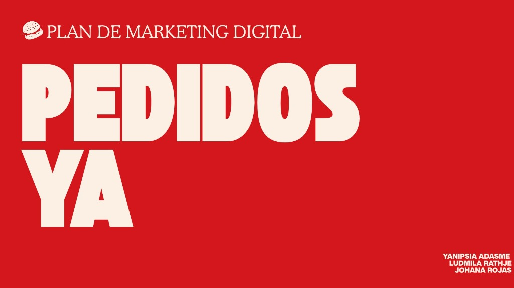
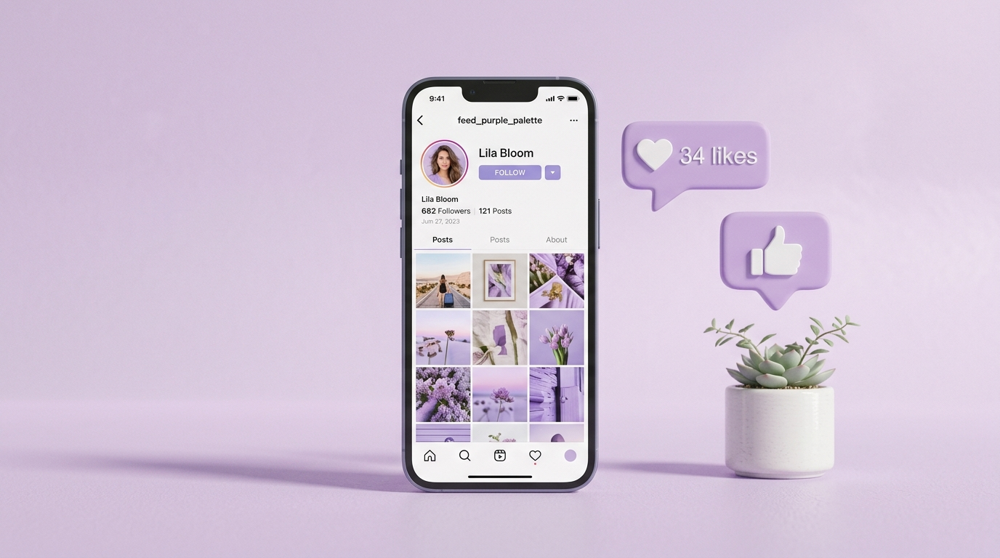
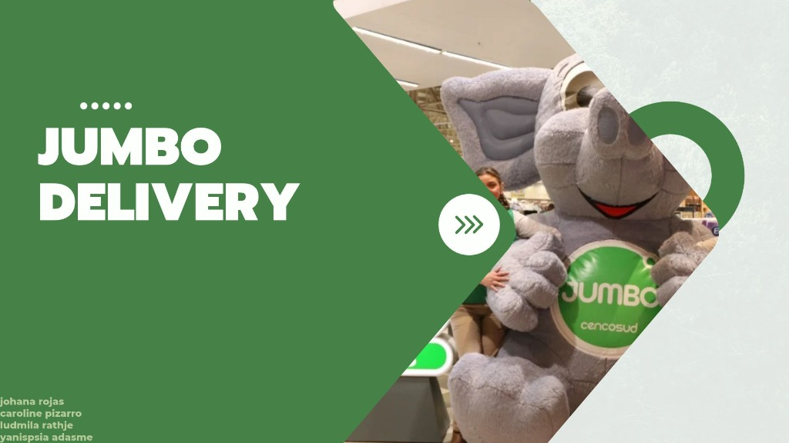

Plan de Marketing Digital: PedidosYa
Diseño y desarrollo de plan de marketing enfocado en posicionamiento de marca, estrategia de delivery y captación digital de clientes.
Ver proyecto en Canva →
Planes de marketing y estrategias de marca diseñados en Canva.
Diseño y desarrollo de plan de marketing enfocado en posicionamiento de marca, estrategia de delivery y captación digital de clientes.
Ver proyecto en Canva →
Estrategia integral de marketing para retail y supermercados, análisis de público objetivo, mix promocional y optimización de presencia comercial.
Ver proyecto en Canva →
Estrategia de comunicación y presentación visual para el servicio de despacho a domicilio de Jumbo, orientada a fidelización y experiencia omnicanal.
Ver proyecto en Canva →